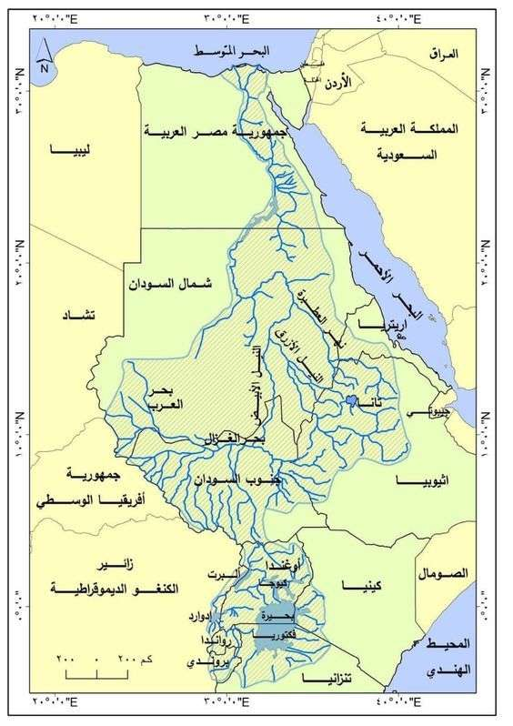

The Nile River
The eternal artery of life — flowing from the heart of Africa to the Mediterranean, carrying the history of civilizations and the hope of millions.
Total Length (km)
Nile Basin Countries
Basin Area (km²)
Tons of Silt / Year
Introductory Video — The Nile River
Discover the Nile River and its civilizational and environmental significance.
Nile River Basin Map & Tributaries

The Nile extends from Lake Victoria in the south to its mouth in the Mediterranean Sea in the north, crossing 11 African countries.
Main Tributaries & Sources
- 1 White Nile — originates from Lake Victoria (the world's second-largest freshwater lake) and provides the year-round base flow.
- 2 Blue Nile — originates from Lake Tana in Ethiopia, contributing 59% of total Nile water and the main source of fertile silt.
- 3 Atbara River — joins north of Khartoum, sourced from the Ethiopian Highlands. Contributes 13% of the Nile's water.
- 4 Furthest Source — the Luvironza River in Burundi, a tributary of the Kagera River that flows into Lake Victoria.
The 11 Nile Basin Countries
Egypt relies on the Nile for 97% of its water resources, and Sudan for 77%.
Economic & Civilizational Importance
- The Nile supports the livelihoods of tens of millions through agriculture, providing over 75% of the basin's workforce.
- Total irrigated lands across the basin are estimated at 54,000 km², with over 97% in Egypt and Sudan.
- Home to the largest African crocodiles, hippos, turtles, and hundreds of bird species.
- The ancient Egyptians called it "Iteru Aa" (the Great River) — its modern name derives from the Greek Neilos.
Water Shares & Key Challenges
- The Grand Ethiopian Renaissance Dam (GERD) on the Blue Nile represents one of the greatest current challenges for Egypt and Sudan.
- The Nile carries 110 million tons of silt annually, renewing soil fertility but reducing dam storage capacity.
- Nile Basin Initiative (1999) — an international agreement to strengthen regional cooperation among the ten basin countries for optimal water use.
Egypt's Legislative Arsenal
The strict legal framework for protecting waterways and deterring violations and pollution.
Law 48 of 1982
Primary Nile Protection Law (Amended 2015)
- Article 2: Total ban on discharging any waste (solid, liquid, gaseous) into waterways without prior authorization from the Ministry of Irrigation.
- Article 3: Requires the Ministry of Health to conduct periodic analyses of discharge samples to verify the absence of toxins, with immediate license revocation upon violation.
- Article 7: Prohibition of fuel and oil leaks from river vessels (ships, floating hotels, houseboats).
- 2015 Amendments: Floating hotels included among facilities required to have waste treatment systems before discharge.
Click here to read more
Law 147 of 2021
Updated Water Resources and Irrigation Law
- River Buffer Zone: Buffer zone set at 80 meters from the bank line, with a complete ban on construction or polluting activities.
- Stricter Penalties: Fines up to EGP 200,000, imprisonment, and doubled penalties for repeat offenses.
- Article 85 (Industrial Governance): Factory licenses linked to having internal treatment plants connected to a continuous monitoring system with the Ministry of Irrigation.
- Removal Authority: The Ministry's inherent right to remove violations "administratively" and immediately at the violator's expense.
Click here to read more
Law 202 of 2020 — Waste Management
Regulates solid waste and plastic management, criminalizing disposal in waterways with severe penalties including up to 5 years imprisonment and fines.
Click here to read more
Law 4 of 1994 — Environment (as Amended)
Criminalizes discharging industrial waste and dumping hazardous materials into the Nile, requiring facilities to obtain Environmental Impact Assessment reports before operations.
Click here to read more
Egypt's Water Balance Reality
Egypt faces an existential challenge as per-capita share declines while core water resources (the Nile) remain fixed at 55.5 billion m³, against ever-growing demand exceeding 114 billion m³ annually — placing us well below the threshold of acute water scarcity.
Per-Capita Water Share (Poverty Threshold: 1,000 m³)
490 m³ / year
Declined from 2,526 m³ in 1947 to approximately 490 m³ for 2025–2026, officially classifying Egypt below the absolute water scarcity threshold.
Water Deficit
54 billion m³
The total gap between demand and actual supply, partially bridged by recycling agricultural drainage.
Virtual Water
33+ billion m³
Deficit bridged through importing food commodities.
Historical Decline in Per-Capita Share vs. Population Growth
Water Consumption Distribution
Agriculture consumes 76.91% of resources — highlighting the importance of modern irrigation.
Advanced Statistics
A comprehensive data-driven view of Egypt's water situation in numbers and charts.
Egypt's Nile Share (billion m³)
Per-Capita Share m³/year
Tons of Industrial Pollutants/Day
Lined Canals by 2024
Historical Decline in Per-Capita Share
Water Sources in Egypt
Sources of Environmental & Chemical Pollution
Complex challenges requiring real-time monitoring to ensure the river's environmental security.
Tons of Industrial Pollutants/Day
Tons of Solid Waste/Year
Child Deaths/Year from Intestinal Diseases
Fish Species That Have Disappeared
Industrial Pollution (270 tons/day)
A detailed study in Aswan Governorate confirmed that paper, sugar, and ferrosilicon factories discharge high concentrations of Chemical Oxygen Demand (COD = 59.6 mg/L) and Biological Oxygen Demand (BOD = 36.5 mg/L), as well as heavy metals (lead, mercury, chromium) from untreated effluents.
Agricultural Runoff (Eutrophication)
Massive leakage of nitrates, phosphate fertilizers, and pesticide residues causes eutrophication, depleting dissolved oxygen (DO) and killing aquatic life, while triggering the growth of suffocating algal blooms.
Solid Waste (14 million tons/year)
Waste decomposes into microscopic compounds (microplastics) that enter the food chain, leading to the disappearance of approximately 40 species of Nile fish.
Biological & Municipal Pollutants
Untreated sewage and floating houses elevate E.coli bacteria levels, causing intestinal epidemics that claim approximately 17,000 children's lives annually. Total Suspended Solids (TSS) reached 13.1 mg/L at some sites.
Conservation & National Projects
A strategy to reduce losses and maximize economic and agricultural output.
Smart Agriculture & Modern Irrigation
Ministerial Decree 1470/2023 — Mandatory Conversion
Converting millions of acres from flood irrigation to drip and sprinkler systems, integrating IoT technology and moisture sensors. Actual results (2025): saving 3–5 billion m³/year upon full conversion, with a 25% increase in yield per acre.
National Canal Lining Project
Reducing losses through soil seepage
Cost per kilometer: 3 million EGP. Economic feasibility (BCR) exceeds 1.0 across all discount scenarios (5%, 7%, 10%).
20,000 km
Total National Plan
5 billion m³
Expected Water Savings
Canal Lining Project Statistics (May 2026 Updates)
| Phase / Description | Length (km) | Estimated Cost | % of Target | Status |
|---|---|---|---|---|
| Foundation Phase (Phase 1) | 7,000 | EGP 18.0 Billion | 35% |
✔ Complete |
| Intermediate Expansion Estimates | Undefined | EGP 68.0 Billion | - |
⚙ In Progress |
| Target (2026/2027 Plan) | 600 | ~ EGP 2.4 Billion | 3% |
◎ Planned |
| Overall Project Final Estimates | 20,000 | EGP 80.0 Billion | 100% |
Overall Goal |
* Source: Comprehensive Strategic Report (May 2026 Updates).
Bahr El-Baqar Station
- Triple treatment (physical, chemical, biological)
- 120 disc filters with 10-micron apertures + ozone + chlorine
- Reduces organic load (BOD) by 95%
- Targets reclamation of 456,000 acres in Sinai
El-Hamam Station
- Conveyor route spanning 174 km
- 12 giant pumping stations along the route
- Targets reclamation of 2 million acres (Egypt's Future)
- Advanced triple treatment meeting international standards
El-Mahsama Station
- International awards as best engineering project worldwide
- An inspiring local model for water sustainability
- Safe recycling according to international environmental standards
Proposed Engineering Monitoring & AI System
An integrated technical architecture from the riverbed to satellite surveillance.
1. Perception Layer
Submerged sensor nodes measuring: pH, DO, EC, Turbidity, TDS, Temp, Nitrates, and Phosphates.
Biosensors
Rely on enzymatic energy converters to detect heavy metals and bacteria in less than 5 minutes. Cost: $300–$3,500 per unit.
2. Transport Layer
Overcomes weak infrastructure in rural areas through low-power communication protocols.
LoRaWAN — Range 10–15 km
Signal strength -94 dBm with minimal power consumption. NB-IoT for areas with 4G coverage. 5G for urban facilities.
3. Cloud Layer
Cloud-based big data processing and management through Web-GIS dashboards for decision-makers.
Automated Alerting (within 30 seconds)
Pattern analysis and anomaly detection (XGBoost) to predict pollution paths and issue automatic closure orders for drinking station intakes.
Satellites (Sentinel-2 & SRIs)
Multispectral satellite imagery is used to extract Spectral Reflectance Indices (SRIs) to estimate Total Suspended Solids (TSS), chlorophyll, and turbidity with 80–90% accuracy, track river encroachments, and provide geothermal mapping.
Bridge Cameras & YOLOv8 Models
AI computer vision models running on bridge cameras, tasked with automatically detecting and classifying floating plastic waste (Macroplastics) to estimate the volume of pollution flowing toward the Mediterranean Sea. Research published in Frontiers (2025).
Proposed Simulator for Nile Pollution Monitoring Stations
Interactive simulation of an Early Warning System (EWS) connected to a LoRaWAN network — click on a node to view its live data.
Interactive Map (Web-GIS)
Water Quality Index (WQI)
Good
Click on a node to view its real-time data.
pH
6.5–8.5
DO
>4 mg/L
Turb
<50 NTU
EC
<800 µS
Temp
10–35°C
TDS
<500 mg
Metals
<50 µg/L
E.coli
<200 CFU
µPlastic
<100 p/L
Real-Time Trend (pH — DO — Turbidity)
Node 1 | AswanIncident Simulation — Node 1
Interactive Tools
Simulation and analysis tools to explore Egypt's water security scenarios.
Smart Farm Optimizer
Select crop and irrigation system
Personal Water Calculator
Discover your daily usage vs. the national average
Your Daily Usage
Liters/Day
National Average
Liters/Day
Water Scarcity Projector
Population scenarios vs. Nile share
Annual Per-Capita Share
⚠ Below Absolute Water Scarcity Threshold
International Comparison: Per-Capita Water Share
m³ / person / year — Egypt vs. the World
Roadmap & Strategic Recommendations
The scientific and engineering vision derived from research for 2026 and beyond.
1. Expand Smart Monitoring
Establish a unified network by deploying more than 500 IoT nodes along the river and its branches, linked to a national early warning center supporting real-time decision-making.
2. Industrial Discharge Governance (Art. 85)
Actual implementation of Article 85 of Law 147/2021 by requiring factory licenses to have internal treatment plants connected to the Ministry of Irrigation.
3. Localize Biosensor Manufacturing
Encourage national research to produce biosensors locally at low cost for detecting heavy metals and pesticides, reducing import dependency.
4. Circular Economy & Plastics
Launch initiatives such as "Very Nile" for recycling plastics extracted from the Nile, and integrate computer vision technologies to detect floating waste.
5. Accelerate Canal Lining & Smart Irrigation
Complete the 20,000 km within 5 years with accessible financing mechanisms to convert smallholder farmers to drip irrigation and integrate IoT for irrigation scheduling.
6. Periodic Legislative Review
Review Law 48/1982 every 5 years to accommodate emerging pollutants (pharmaceutical compounds, microplastics) and mandate satellite monitoring.
Student Research
Google Drive
Arabic References & Laws
- Central Agency for Public Mobilization and Statistics. (2024). Water Resources and Irrigation Bulletin in Egypt: Indicators and Prospects. Cairo, Egypt.
- Arab Republic of Egypt. (1982). Law No. 48 of 1982 on Protection of the Nile River and Waterways from Pollution and its Executive Regulations and Amendments. Official Gazette.
- Arab Republic of Egypt. (2021). Law No. 147 of 2021 Issuing the Water Resources and Irrigation Law. Official Gazette.
- Arab Republic of Egypt. (2020). Law No. 202 of 2020 on Waste Management. Official Gazette.
- Ministry of Water Resources and Irrigation. (2024). Annual Report on Canal Lining Projects and Modern Irrigation Transition Progress. Cairo, Egypt.
- Egyptian Presidency. (2024). Bahr El-Baqar Wastewater Treatment Station: Technical Data and Achievements. Cairo.
English & Academic Sources
- Chowdury, M. S. U., Emran, T. B., Ghosh, S., et al. (2019). IoT based real-time river water quality monitoring system. Procedia Computer Science, 155, 161–168.
- Essamlali, I., Nhaila, H., & El Khaili, M. (2024). Advances in machine learning and IoT for water quality monitoring: A comprehensive review. Heliyon, 10(6), e27920.
- Hassan, M., et al. (2025). IoT-Based Water Quality Monitoring Systems for the Nile River. Journal of Environmental Engineering & Technology.
- Heggy, E., Sharkawy, Z., & Abotalib, A. Z. (2021). Egypt's water budget deficit and suggested mitigation policies for the GERD filling scenarios. Environmental Research Letters, 16(7), 074022.
- Mourad, K. A., et al. (2025). Economic viability of irrigation canal lining in Upper Egypt: A benefit-cost analysis. AQUA—Water Infrastructure, Ecosystems and Society.
- Okafor, G., et al. (2025). Assessment of industrial pollution and water quality in the Nile River using GIS-based indices at Aswan, Egypt. Scientific Reports, 15.
- Lekmine, G., et al. (2024). Smart water quality monitoring with IoT wireless sensor networks. Sensors, 24(9), 2871.
- Soliman, M. F., & Esmail, M. (2021). Past and future trends of Egypt's water consumption and its sources. Nature Communications, 12, 4508.
Research Team
A group of researchers from the Faculty of Engineering — Damanhour University who prepared this project.